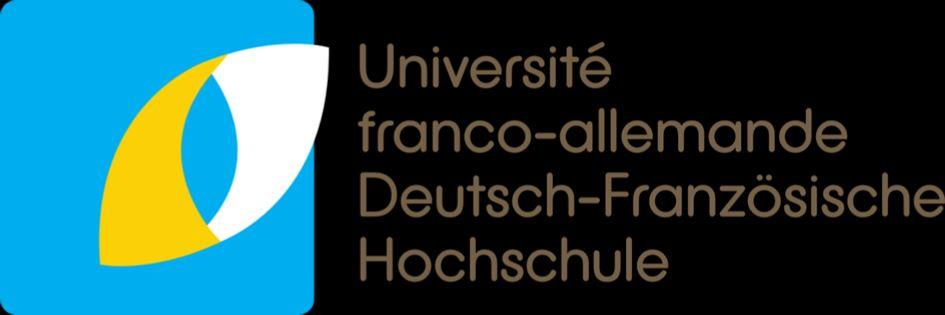
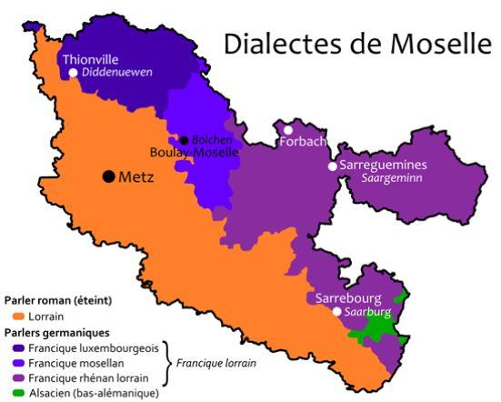

La Francophilie d’Annegret Kramp-Karrenbauer, successeur d’Angela Merkel, est une chance pour la France
par Marc KELLER
Dans un excellent article de la revue Méthode de décembre 2018, intitulé « Annegret Kramp-Karrenbaurer, future chancelière allemande ? », Alexandre Wattin nous relate la question du bilinguisme franco-allemand dans une interview d’Annegret Kramp-Karrenbauer, alors présidente du Land de Sarre :
Question : En 2013, vous avez lancé un projet visant à faire du français une langue véhiculaire en Sarre, au même titre que l'allemand, y compris dans l'administration. Est-ce à dire que tous les écoliers devront parler français ?
A.K.-K. - Oui, notre objectif à long terme est que les générations qui naissent aujourd'hui deviennent bilingues. Ce n'est pas quelque chose qu'on peut décréter, mais nous soutenons à fond cette évolution. L'apprentissage doit commencer dès le plus jeune âge. Il ne s'agit pas d'apprendre le français en tant que deuxième langue, mais de le parler au quotidien en tant que langue de voisinage. Actuellement, 40 % des maternelles de Sarre sont bilingues. Nous voulons aller plus loin et faire en sorte qu'à la fin du primaire tous les enfants parlent français. À partir de la 6e, ils pourront alors débuter l'anglais. Nous voudrions aussi que le français soit une langue présente dans la vie publique, que les panneaux indicateurs, les formulaires administratifs, les accès Internet soient rédigés également en français. Le plurilinguisme sera évidemment un atout pour nos concitoyens »
Je voudrais apporter ma modeste contribution à cet édifice par une expérience dont j’ai été le témoin.
HISTORIQUE DU BILINGUISME
Le général de Gaulle et Konrad Adenauer avaient bien compris qu’il ne suffit pas de décréter l’amitié franco-allemande. Encore faut-il la faire vivre. C’est pourquoi a été lancée l’idée des jumelages transfrontaliers dès le début des années 60. Presque toutes les villes alsaciennes et mosellanes avaient un « jumeau » en Allemagne. Pour ma ville natale de Saverne, c’était Donaueschingen, aux portes de la Forêt Noire. Après m’être occupé directement de ce jumelage pour son 20ème anniversaire, je peux témoigner combien il était vivant, avec de multiples échanges culturels et sportifs. Mais force est de constater qu’à cette époque les allemands parlaient très peu le français tandis que les alsaciens-mosellans étaient majoritairement bilingue, par le biais de nos langues régionales : le Blat lorrain et l’Alsacien.
Tout a donc très bien fonctionné tant que du côté frontalier français on parlait allemand. Et tout a commencé à se dégrader quand les langues régionales sont tombées en désuétude, dans les années 90.
RENOUVEAU DU BILINGUISME
Le président Jacques Chirac et le chancelier Gerhardt Schroeder, au fait de ce problème, ont souhaité d’un commun accord, relancer l’amitié franco-allemande en se donnant de nouveaux moyens, et tout particulièrement promouvoir et favoriser l’apprentissage de l’Allemand en France, et réciproquement.
Dans ce contexte, un de mes amis d’enfance, directeur d’un groupe de 5 librairies à Berlin, a reçu un beau matin, la visite de « trois Messieurs » à son bureau, qui lui demandent : « Vous êtes bien Monsieur Untel, né en France et de culture francophone, diplômé d’une École de Commerce suisse, en langue allemande ? ». Les visiteurs se sont présentés : ministère de l’Éducation, de la Culture, de l’Intérieur. Et ils ont proposé à mon ami une belle rémunération pour occuper le poste de responsable du développement linguistique franco-allemand à Berlin. « Nous cherchons quelqu’un de culture française, lui explique-t-on, pour bien agir comme le ferait un français, mais de langue allemande, pour se comprendre au quotidien, sans risque de distorsion ». Le genre de poste qui ne se refuse pas. Dynamique et inventif, mon ami a mis des moyens originaux en œuvre pour relancer l’enseignement de l’Allemand en France et dans les pays francophones.
Au bout de 6 mois, il s’est étonné de n’avoir pas encore entendu parler de son homologue français, puisqu’on lui avait dit que cette action était réciproque.
PRAGMATISME CONTRE ENARCHIE
Il demande à ses collègues du ministère comment trouver son alter-ego français. « Rien de plus facile » lui répond-t-on : « nous avons un annuaire des ministères français ». Et aussitôt on trouve la personne concernée. Mais à la lecture de son nom, mon ami a un mouvement d’étonnement : ce n’est pas possible. Si c’est LUI, c’est quelqu’un qui ne parle pas un mot d’allemand. Il s’empresse donc d’appeler et au bout du fil, il a bien la personne à laquelle il pensait. Et qui est un camarade de classe commun, que moi aussi je connais très bien et qui était brillant, sauf en langues ! Ce dernier lui explique qu’après l’ENA il a fait une carrière dans divers ministères et que ce poste est un tremplin provisoire pour rebondir ailleurs. Ils ont alors comparé leurs moyens : à Berlin mon alsacien était un vrai chef de service avec 60 personnes sous ses ordres, des moyens clairement définis et notamment un budget déplacement, un autre pour l’approvisionnement de bibliothèques en France etc… Alors qu’en France notre énarque était tout seul, sans personnel, sans aucun budget, même pas de quoi venir une fois à Berlin, mais avec un salaire 30% plus élevé !!! Inutile de préciser que du côté français rien n’a jamais été entrepris pour promouvoir l’apprentissage du français en Allemagne, sauf des réunions au ministère et à l’ambassade d’Allemagne à Paris.
APRES L’ALLEMAND LE FRANÇAIS
10 ans se sont passés de la sorte et un beau jour, le ministre explique à mon ami que c’est quand même très gênant que la France n’ait rien fait. Et vu les excellents résultats de sa mission en France, il lui propose d’élargir ses compétences et de promouvoir aussi l’apprentissage du français en Allemagne. Comme dit mon vieux collègue : « Ça rajeunit de 10 ans » et il a repris son bâton de pèlerin, a fourni des livres français à toutes les bibliothèques scolaires, a remis en route les camping-cars itinérants pour faire des animations linguistiques.
Et, sentant un véritable intérêt pour la langue de Molière chez nos voisins d’Outre-Rhin, il a établi des contacts au plus haut niveau. Un travail qui a fini par déboucher sur cet épisode de 2013, quand la présidente du Land de Sarre, Annegret Kramp-Karrenbauer, a décidé de rendre son Land bilingue par un apprentissage obligatoire du français.
Quelle belle victoire pour mon ami, obscur fonctionnaire franco-allemand, qui aura marqué de son sceaux une étape importante dans la construction européenne.
LANGUES REGIONALES
En dehors des langues « principales » et académiques que sont l’allemand et le français, cette grande région transfrontalière qui comprend l’Alsace, la Moselle, le Luxembourg, la Sarre, le Pays de Bade, le Canton de Bâle, offre une richesse supplémentaire à travers ses langues régionales qui ont une racine commune.
Qu’on pratique le Blat lorrain de Patricia Kaas, l’Alsacien qui continue même à être parlé sur FR3, le Bâlois ou le Sarrois, le Luxembourgeois qui reste la langue véhiculaire de ce petit pays, on se comprend tous.
C’est d’ailleurs ce qui fait de ce groupe de langues classées comme « Blat alémanique», la langue régionale la plus parlée en Europe. Une autre pierre qui contribue à la pérennité de l’amitié franco-allemande.

Partager cette page